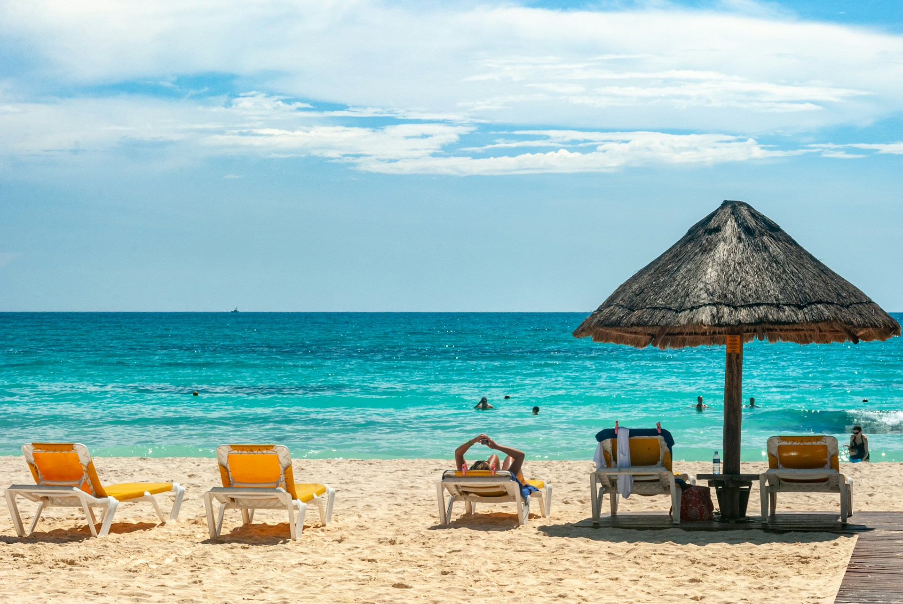
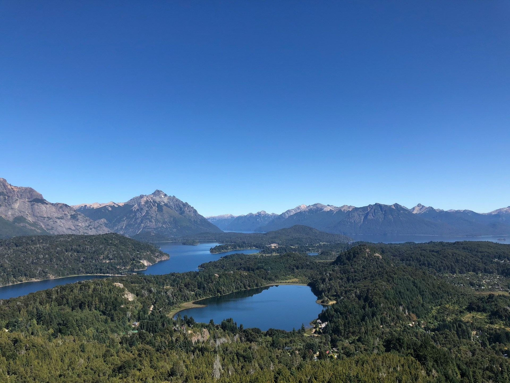

Cancún, México
Playas de arena blanca y aguas turquesas, idel para quienes buscan sol y una excelente vida nocturna

Contamos con una amplia variedad de destinos nacionales e internacionales para que elijas el que mejor se adapte a tu estilo de viaje. A continuación, te presentamos algunos de los más elegidos por nuestros clientes
Playas de arena blanca y aguas turquesas, idel para quienes buscan sol y una excelente vida nocturna

Historia, arte y gastronomía se combinan en una de las ciudades más visitadas del mundo
Un destino perfecto tanto en invierno para esquiar como en verano para hacer trekking
